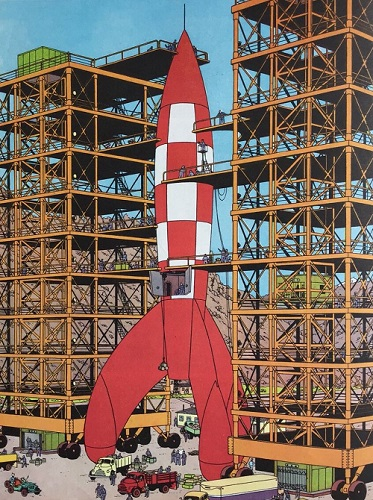
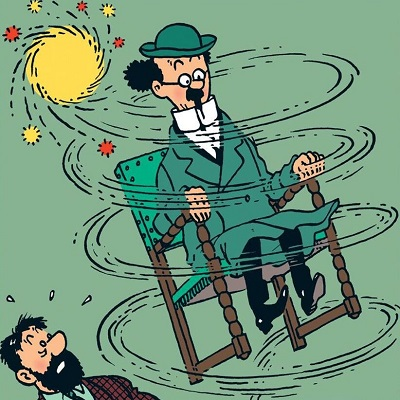
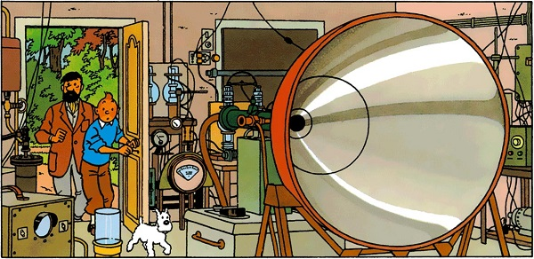

Les inventions du
Professeur Tournesol
-

-
LA FUSÉE D'ESSAI X-FLR-6
Modèle réduit et précurseur radio-guidé de la fusée lunaire, elle devait rapporter les premières photos de la face cachée de la Lune, mais Tournesol dut la détruire en vol pour qu'elle ne tombe pas en des mains ennemies.

-

LA ROSE BIANCA Horticulteur à ses heures, Tryphon a créé une rose unique en l'honneur de la Castafiore : exquisement parfumée et «d'un blanc idéal, éclatant, immaculé».
-

LA MACHINE À BROSSER Aussi drôlatique qu'encombrant et ravageur, ce «machin» - Haddock dixit - n'est visiblement pas la plus grande réussite du cher Tryphon !
-
L'ANTIDOTE AU N14 Un double antidote en fait : des cachets pour traiter l'hyperpilosité multicolore des Dupondt et un produit neutralisant l'effet explosif dans l'essence.

-

-
L'ÉMETTEUR D'ULTRASONS
Mais que voulait donc faire Tournesol de sa dangeurosissime machine à ultrasons ? Pas la guerre en tous cas : il a détruit ses plans pour que nul ne puisse en faire une arme.
-
LE PATIN À MOTEUR
La trouvaille d'un visionnaire pour résoudre les problèmes de circulation en roulant à.. 50km/h ! Mais où donc Tournesol cachait-il le carburant ? -
LE SUPERCOLOR-TRYPHONAR
Haddock a raison : la télé couleur était déjà à l'essai aux Etats-Unis. Mais le professeur propose un système différent.. et pour une fois peu convaincant.